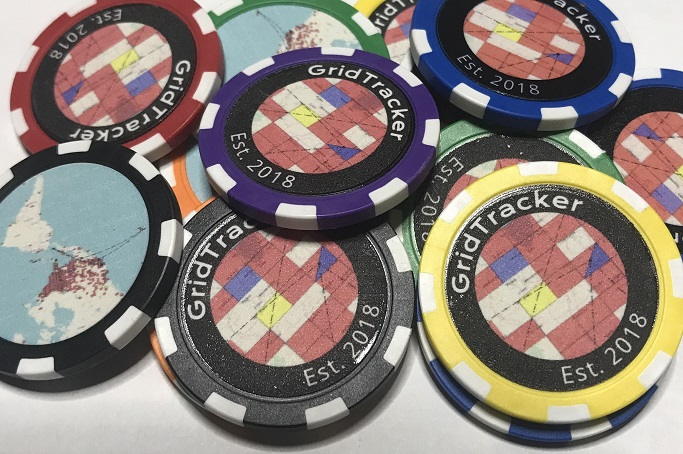

[v1.20.0821] August 21st, 2020
GridTracker Main Window:
Update:
"Map View" renamed "Map View Filters"
"Callable Roster" renamed "Call Roster + Award Tracker"
Minimum width now 200 pixels (you can hide the map now)
New:
"Prop" added to "Map View Filters"
Propagation Mode for filtering Logbook data *only*
Live data view is unaffected
Update:
Removed "FFMA" and "GMA" award layers and replaced with "US48" layer
To view your Fred Fish Memorial "FFMA" Award:
Select "US48" hotkey (8) then;
Set your Band filter to "6m"
To view your AMSAT GridMaster "GMA" Award:
Select "US48" hotkey (8) then;
Set your Band & Mode filters to "Mixed"
Set your Prop filter to "Satellite"
Call Roster:
Update:
Callable Roster renamed to "Call Roster"
Fixed:
Award Tracking:
"Wanted" box remains as it's needed
Fix bad filtering flags
When enabling "Wanted" entities; right-click menu now tracks correctly
Issue with New/Unconfirmed callsigns not showing up at all
Return of the "strikeout" on callsigns that have been confirmed
by popular demand
Compact Mode:
Sorted by "Age" for now
(Will add a right-click menu to select sort type later on)
Added "DXCC" under "Callsign"
Tooltip(mouse-over) added with decode details
(Will add Worked/Confirmed status by band/mode later on)
PSK-Spots:
Fixed:
Memory issue when 1500 spots in 24 hours
Thanks to mister "I get out" NR0Q for finding this one
Logging:
Local Files(s)
Details:
Filename now has a tooltip with the full file path
Thank you for reading the entire update!
Mention "phone-sofa" in any forum I read and I'll send you a GridTracker token
to the address associated with your callsign lookup
Please don't mention this easter-egg to anyone. I want to see who reads the update
To the 21 of you out of 650-ish, who downloaded and read the update in v1.20.0819:
I salute you! And I'll be shipping out tokens when I get a chance! Thank you!
